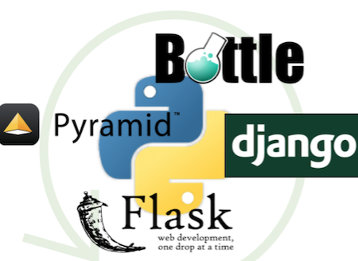

Python数据模型构建和迁移方案：SQLAlchemy&Alembic
本文介绍了在Python web世界中，常见的数据模型构建和迁移方案:SQLAlchemy配合Alembic。

Python的世界里有许多web框架：比如大而全的 Django， 提供了模型定义迁移，到路由处理，再到视图的渲染等整套功能；比如小巧灵活的Flask， 虽然只包含了核心的请求处理内容，但却可以通过安装生态丰富的插件来完成大多数所需功能；比如面向ERP行业的Odoo, 除了基础的MVC, 还提供了常用的进销存和人力资源等模块以及方便的web数据管理界面；比如以异步IO为特色的Sanic 和 Tonado， 提供了一套基于异步IO的请求处理方案；还有其他Bottle, Cherrypy, Pyramid 等。
这么多web框架其中一类是全套web解决方案的，像django,pyramid,odoo等，一类是提供路由和请求处理的"api"微型框架，像flask, sanic, bottle, cherrpy等。当使用到后者这类微型框架时，根据业务场景不同，如果需要处理模型的建立、升级和迁移的问题，可以考虑下接下来要介绍的sqlalchemy 和Alembic。
SQLAlchemy是python里的处理模ORM(模型关系映射)一套工具，可以通过直观地通过定义python中的class来定义数据表结构，通过操作class的具体object来操作数据记录。 Alembic是一套管理数据库升降级的迁移工具，比如在实际业务场景中需要对已经定义好的模型进行增删字段操作，可以通过alembic来对升降级进行方便地可控地操作。
SQLAlchemy和alembic的安装和详细配置可以参考官方文档，这里我通过一个示例来说明如何实现model的定义和迁移。代码地址在这里。
1 初始化和配置
安装python依赖(主要是SQLAlchemy和alembic):
pip install -r requirements.txt
初始化alembic:
alembic init YOUR_ALEMBIC_DIR
alembic会在根目录创建 YOUR_ALEMBIC_DIR 目录和 alembic.ini 文件，
所以在我的示例代码里， alembic_dir 和 alembic.ini 是运行 alembic init alembic_dir 初始化创建的。
alembic.ini 文件 提供了一些基本的配置，比如数据库的连接选项。
alembic_dir 的目录结构和作用为：
$ tree alembic_dir alembic_dir ├── README ├── env.py # 每次执行Alembic都会加载这个模块，主要提供项目Sqlalchemy Model 的连接 ├── script.py.mako # 迁移脚本生成模版 └── versions # 存放生成的迁移脚本目录 1 directory, 4 files
接下来先来看看sqlalchemy里model的定义，在model目录里：
$ tree . ├── __init__.py # 打包成一个模块 ├── base.py # 定义所有模型继承的Base类 ├── role.py # 定义“角色”模型 └── user.py # 定义“用户”模型 0 directories, 4 files
其中，sqlalchemy的模型类继承自一个由 declarative_base() 方法生成的类，所以在 base.py 里有如下两行代码:
from sqlalchemy.ext.declarative import declarative_base Base = declarative_base()
模型定义完成后，我们需要告诉alembic去哪里找寻模型定义，所以在 alembic_dir/env.py 的21行左右可以看到指定：
# Custmosized import os import sys # 将当前目录(项目更目录)加入sys.path, 当然也可以将根目录下的model加入sys.path,这样就不需要将model封装成模块 sys.path.append(os.getcwd()) from model import Base target_metadata = Base.metadata
另外通常我们也改一下生成模板 script.py.mako ，加上编码信息，否则在升级脚本中如果有中文会报错，参见 alembic_dir/script.py.mako 的前两行。
接下来需要配置alembic连接管理那个数据库，在 alembic.ini 的第38行修改数据库连接选项，这里代码中采用本地的mysql为示例:
sqlalchemy.url = mysql://root:@localhost/test2
2 运行
配置工作做完后，确保本地mysql服务启动，并且有上面配置的数据库后，让我们来生成第一份迁移脚本, 在 sqlalchemy-alembic 目录下运行:
# 其中 "First create user add role table" 是这次迁移脚本的备注，类似git commit的message alembic revision --autogenerate -m "First create user add role table"
运行完命令后，会发现在 sqlalchemy-alembic/alembic_dir/versions 下生成了一个迁移脚本，迁移脚本的主体是:
def upgrade(): # ### commands auto generated by Alembic - please adjust! ### op.create_table('roles', sa.Column('id', sa.Integer(), nullable=False), sa.Column('name', sa.String(), nullable=True), sa.PrimaryKeyConstraint('id') ) op.create_table('user', sa.Column('id', sa.Integer(), nullable=False), sa.Column('username', sa.VARCHAR(length=32), nullable=True), sa.Column('password', sa.VARCHAR(length=32), nullable=True), sa.Column('email', sa.VARCHAR(length=32), nullable=True), sa.PrimaryKeyConstraint('id') ) op.create_index('ix_email_pwd', 'user', ['email', 'password'], unique=False) op.create_index('ix_user_pwd', 'user', ['username', 'password'], unique=False) # ### end Alembic commands ### def downgrade(): # ### commands auto generated by Alembic - please adjust! ### op.drop_index('ix_user_pwd', table_name='user') op.drop_index('ix_email_pwd', table_name='user') op.drop_table('user') op.drop_table('roles') # ### end Alembic commands ###
可以发现，是根据model定义的内容，自带生成的升级和降级代码，实际项目中需要检查一下升降级脚本是否有误。
接下来，在项目根目录下运行升级命令:
$ alembic upgrade head INFO [alembic.runtime.migration] Context impl MySQLImpl. INFO [alembic.runtime.migration] Will assume non-transactional DDL. INFO [alembic.runtime.migration] Running upgrade -> 8deb154aaaa3, First create user add role table
其中 head 表示升级到迁移脚本中最新的版本。
这时候检查数据库，可以发现生成了3张表，升级工作就完成了。
alembic_version # alembic用来追踪目前数据库表的版本的表，表的内容只有一行，为当前版本号，对应于升级脚本上的版本号 roles # 自动生成的表 user # 自动生成的表
接下来，如果对模型有其它改动，比如新增字段等，可以再次生成迁移脚本，检查无误后运行upgrade完成迁移动作。
3 其它
- alembic的迁移脚本也是可以自己手写的，这样不需要配置
env.py里的target_metadata，每次迁移做的事完全有手动来决定对数据库操作。 - alembic的降级可以用类似
alembic downgrade -1的命令，-1代表降级到上个版本，也支持其他参数，具体可以查询文档。 - sqlalchemy 可以以ORM的方式在业务逻辑处理的时候引用，这样每次查询到一条或多条数据，就可以得到一个或多个对象，类似于django的model。
- 在使用类似sanic这样的异步框架时，需要注意orm的选取，是否需要一个异步的orm框架呢，可以考虑的异步orm可以参照这里 ，另外sqlalchemy的作者在15年对此有思考，这篇文章 可以看看。而我在使用sanic的实际项目中是操作的原生sql，异步io类型的orm配合使用留待以后探究。